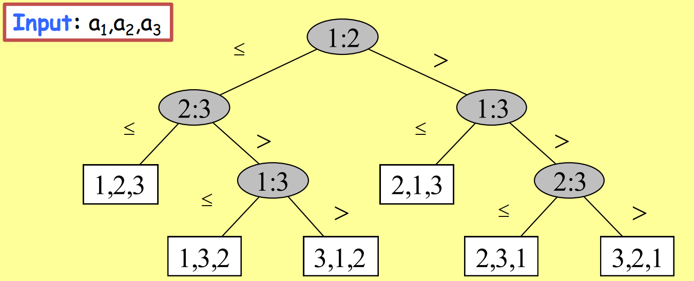
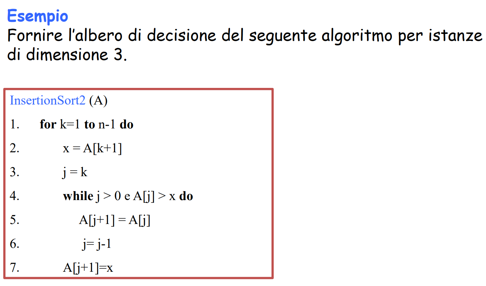
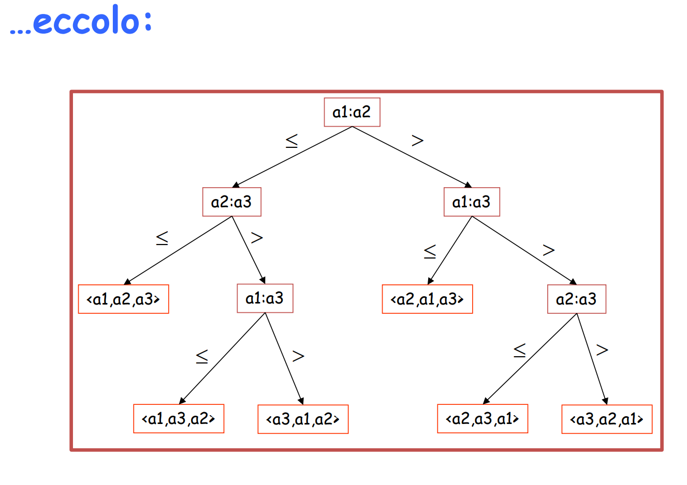
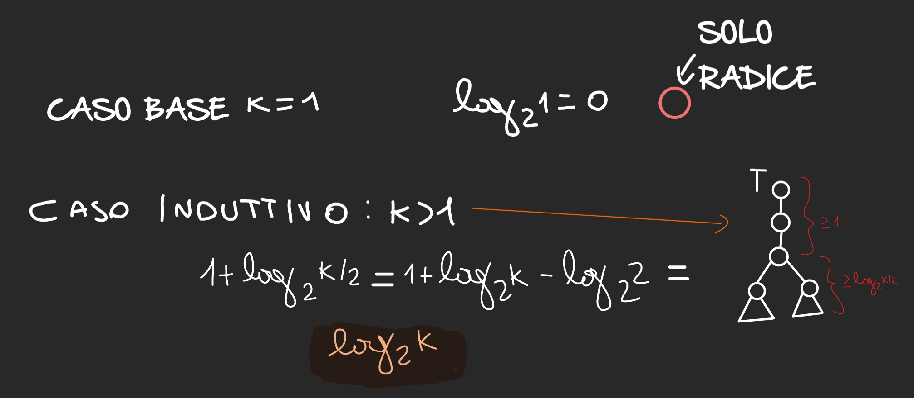
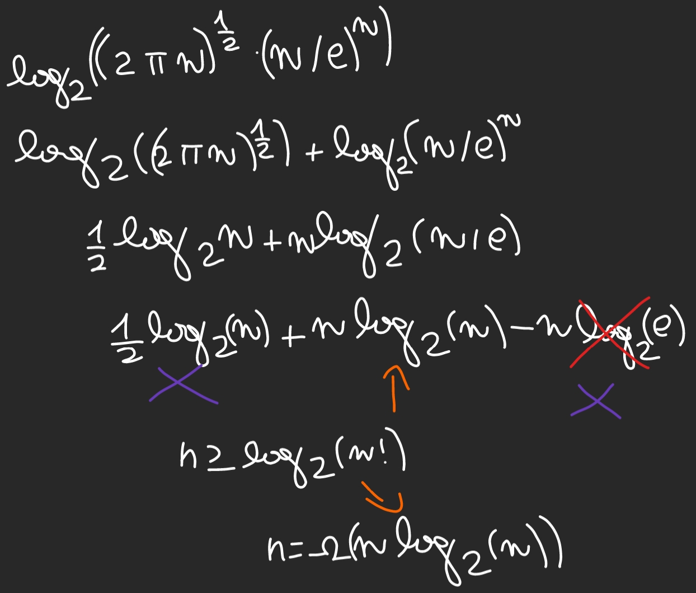
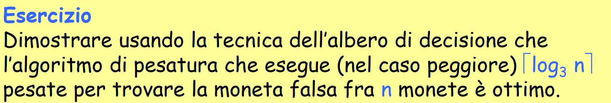
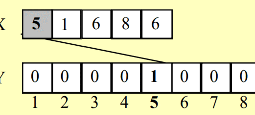
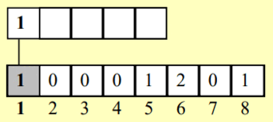
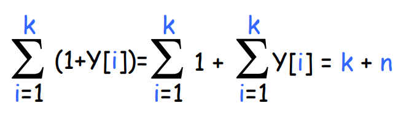

Complessità di un algoritmo
Fino ad ora abbiamo sempre definito la complessità di un algoritmo basandoci su delle risorse che staranno in un upper-bound o lower-bound
- lower-bound: definisco un tale che tutte le risorse che genero del mio algoritmo rispettino la seguente condizione nel caso peggiore
- è il “punto minimo” da cui partire, e posso solo andare a salire.
- upper-bound: definisco un tale che tutte le risorse che genero del mio algoritmo rispettino la seguente condizione nel caso peggiore
- è il “punto massimo” che posso raggiungere, e posso solo andare sotto a lui
che intende per risorsa di calcolo?
memoria spazio utilizzati
- lower-bound di un problema: minimo si sta a quel determinato costo computazionale
- per dimostrare un lower bound in termini di costi si puo usare una tecnica che usa gli alberi di decisione(non funziona con tutti gli algoritmi ma solo su algoritmi basati su confronti)
Analizzare invece un problema e non un algoritmo
come vedo io la differenza tra problema e algoritmo
- il problema rappresenta una cosa risolvibile con più algoritmi e quindi i costi devono definire ogni algoritmo
- l’algoritmo invece è una singola istanza del problema che lo risolve
Un problema ha una complessità rispetto ad una risorsa di calcolo definibile in due casi
- lower bound: se ogni algoritmo del problema P ha costo di esecuzione nel caso peggiore di in quella determinata risorsa
- upper bound: se esiste almeno un algoritmo del problema P che ha costo di esecuzione nel caso peggiore rispetto a una determinata risorsa
Quando un algoritmo è ottimale?
Un algoritmo si dice ottimale quando abbiamo un problema con lower-bound tipo e l’algoritmo riesce a risolvere il problema rispetto a quella risorsa di calcolo in quindi in maniera Ottima, ovvero che più di così non si può fare
Esempio con ordinamento
se ho n numeri e voglio ordinarli ad esempio il lower-bound potrebbe essere (n) ma non sappiamo algoritmi che fanno la cosa in n ma solo con upper-bound tipo quindi abbiamo un gap possiamo fare meglio?
Complessità temporale del problema dell’ordinamento
-
Lower bound:
- un algoritmo che deve ordinare
nper forza di cose deve vederli tutti. - non esiste al momento nessun algoritmo che costi n
- un algoritmo che deve ordinare
-
upper-bound:
- Insertion Sort
- Selection Sort
- Quick Sort
- Bubble Sort
-
upper-Bound migliore:
- Merge Sort
- Heap Sort Questi due algoritmi, sulla base della definizione di prima, sono definiti ottimi all’interno della classe degli algoritmi basati su confronti.
Abbiamo quindi un gap di ) tra il lower-bound e il miglior upper-bound.
Come accennato prima, **tutti questi algoritmi sono basati su CONFRONTI.
Algoritmi basati su confronti
Sono tutti quegli algoritmi che confrontano gli elementi per dare un risultato.
Tutti gli algoritmi che abbiamo visto sono per confronto e quindi questo lower bound vale
DEFINIZIONE: ORDINAMENTO PER CONFRONTI
Dati due elementi e , per determinare l’ordinamento relativo effettuiamo una delle seguenti operazioni di confronto:
Non si possono esaminare i valori degli elementi oppure ottenere informazioni sul loro ordine senza eseguire ALMENO UNA di queste operazioni.
Teorema Lower-Bound
Enunciato
prendete un algoritmo che gira su modello RAM di tipo confronto
- ordina n elementi
- deve fare nel caso peggiore confronti
- MI RACCOMANDO DI USARE LA PAROLA CONFRONTI Merge e Heap sono ottimi
Per dimostrare il Teorema usiamo albero di decisione
IDEA: descrivere in modo astratto il comportamento di un generico algoritmo di ordinamento per confronto attraverso una struttura ad albero, basandosi sull’ipotetico input dato in pasto all’algoritmo. In pratica, partendo dall’input, descrive i confronti che l’algoritmo esegue.
La sequenza di confronti che osserviamo sul display dipende dall’input stesso
- descriviamo in modo astratto tutte le possibili sequenze su un input di dimensione n
- attraverso un albero
- la prossima decisione di ogni algoritmo la facciamo in base al confronto che facciamo prima, ovvero l’esito che porta
Un generico algoritmo di ordinamento per confronto lavora nel modo seguente:
- confronta due elementi e (ad esempio effettua il test );
- a seconda del risultato, riordina e/o decide il confronto successivo da eseguire.
STRUTTURA: l’albero è radicato e - i nodi interni (cerchi grigi) sono i potenziali confronti - le foglie (rettangoli bianchi) sono le risposte dell’algoritmo

spiegazione dettagliata degli step
Guardando dalla radice e spostandoci al figlio di sinistra:
- confronta il primo elemento con il secondo
(1:2)
- se il primo è del secondo, scende a crea il figlio a sinistra
(2:3)- confronta il secondo con il terzo
(2:3)
- se il secondo è del terzo darà come input
PRIMO, SECONDO, TERZO- se il secondo è del terzo crea un altro figlio
(1:3)- confronta il primo con il terzo
(1:3)
- se il primo è del terzo darà come input
PRIMO, TERZO, SECONDO- se il primo è del terzo darà come input
TERZO, PRIMO, SECONDO
ci da una descrizione compatta di tutte le decisioni possibili da fare
al posto dei : dobiamo mettere il simbolo sulla freccia(>, <, ecc...)
avremo quindi le varie permutazioni della sequenza Varie osservazioni utili
OSSERVAZIONI
L'albero di decisione non è associato a un problema
questo perché non rappresenta il problema da risolvere ma i passi decisionali che un algoritmo potrebbe eseguire per risolvere il problema.
L’albero di decisione non è associato solo ad un algoritmo
non è associato AL SINGOLO algoritmo ma mostra i passaggi che ALGORITMI DIVERSI potrebbero fare
L’albero di decisione è associato ad un algoritmo e a una dimensione dell’istanza
nel punto 2 abbiamo detto che di per sé l’albero di decisione non è associato ad un solo algoritmo; ma se noi costruiamo un albero di decisione per un algoritmo specifico e per una determinata istanza, allora l’albero sarà ottimizzato per quel singolo algoritmo.
L’albero di decisione descrive le diverse sequenze di confronti che un certo algoritmo può eseguire su istanze di una data dimensione
l’albero mostra tutte le possibili sequenze di scelte o confronti che l’algoritmo potrebbe fare per risolvere il problema per un input di una certa dimensione.
L'albero di decisione è una descrizione alternativa dell'algoritmo (customizzato per istanze di una certa dimensione)
Esercizio sull'albero

ecco la soluzione 
Proprietà
-
Per una particolare istanza, i confronti eseguiti dall’algoritmo su quella istanza rappresentano un cammino radice –> foglia
-
L’algoritmo segue un cammino diverso a seconda delle caratteristiche dell’istanza (input)
- Caso peggiore: cammino più lungo
-
Il numero di confronti nel caso peggiore è pari all’altezza dell’albero di decisione
-
Un albero di decisione di un algoritmo (corretto) che risolve il problema dell’ordinamento di
n elementideve avere necessariamente almenon! foglie- se ce ne fossero meno vorrebbe dire che c’è una permutazione che non compare mai.
l'istanza peggiore è quella che innesca il cammino più lungo
Lemma che ci serve per dimostrare il lower-bound
Info
Un albero binario T con k foglie, ha un altezza di almeno
- k lo poniamo all’inizio
Caso base
Abbiamo una radice che ovviamente ci porta un albero lungo 0
Caso induttivo con almeno foglie
Ci poniamo un nodo che rappresenta il primo padre più vicino alla radice inevitabilmente deve avere due figli e uno dei due figli potrebbe essere un sotto albero che avrà almeno foglie minori del numero di applico l’ipotesi induttiva e avrò
- 1 approssimazione di tutti i nodi prima che arrivi a
- faccio formule matematiche 
TUTTO QUESTO RIGUARDA GLI ALBERI PER CONFRONTO
Dimostrazione lower bound con lemma
considerando un albero di decisione di un generico algoritmo di ordinamento avremo che
- è almeno alto per il punto 4 delle proprietà
- Applico formula di Stirling :
- faccio delle semplificazioni varie e ottengo che
semplificazioni varie

Esercizio sul lower bound

53 questo all'orale ci sventra
Algoritmi non basati su confronti
IntegerSort
Come funziona?
per ordinare elementi con valori posizionati in un array fatto da
- usiamo un array con contatori che conteranno quante volte appare il numero in quella data posizione in poche parole quanti confronti? zero
Inserimento in y

Ricostruzione in x

PSEUDOCODICE
Algoritmo IntegerSort (X, k)
1. Sia Y un array di dimensione k // O(1)
2. for i = 1 to k do // O(k)
3. Y[i] = 0
4. for i = 1 to n do // O(n)
5. Y[X[i]] += 1
6. j = 1 // O(1)
7. for i = 1 to k do // O(k)
8. while (Y[i] > 0) do // per i fissato,
// #volte eseguite è al più 1 + Y[i] -> O(k + n)
9. X[j] = i
10. j += 1
11. Y[i] -= 1- il primo for mette ad ogni posizione di zero
- il secondo for incrementa in base alle volte in cui appare l’elemento nella posizione
- faccio un for per ricostruirmi l’array
- decremento con un while finchè non diventa 0
COSTI COMPUTAZIONALI
- da riga ho costo volte perché ogni volta il while lo faccio almeno una volta Ogni iterazione del
whileha costo , quindi il totale è proporzionale a

IntegerSort: analisi
- Tempo , per inizializzare
Ya 0 (righe2-3del codice) - Tempo , per calcolare i valori dei contatori (righe
4-5del codice). - Tempo , per ricostruire
X(righe6-11) COSTO TOTALE:Quindi abbiamo un tempo lineare se Questo non contraddice il lower-bound di perché L’INTEGER SORT NON È UN ALGORITMO BASATO SU CONFRONTI!
se fa cagare dipende da k se k supera n avremo una cosa non lineare